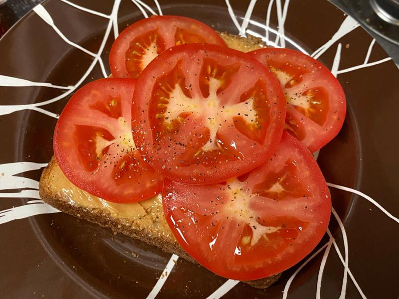

Mom's Peanut Butter Toast with Tomatoes

Photo credit: from this recipe blog post with an alternative method for this dish
Recipe Description
My Mom always had this quick snack as a ready option for us after school. Definitely a holdover from her upbringing and her parents growing up in the Great Depression. However, it is simply delicous especially with toasted bread and warm melty peanut butter.
Ingredients
- Whole Wheat Bread
- Cruncy Peanut Butter
- Fresh Garden Tomatoes
Steps
-
Get a couple of bread slices, or just one if you prefer open face, and put them in the toaster to desired crispiness.
-
Spread peanut butter over toast allowing it to get warm and melty.
-
Slice fresh tomatoes. I like them cut thick. Spread tomato slices over entire face of the toast on top of the peanut butter.